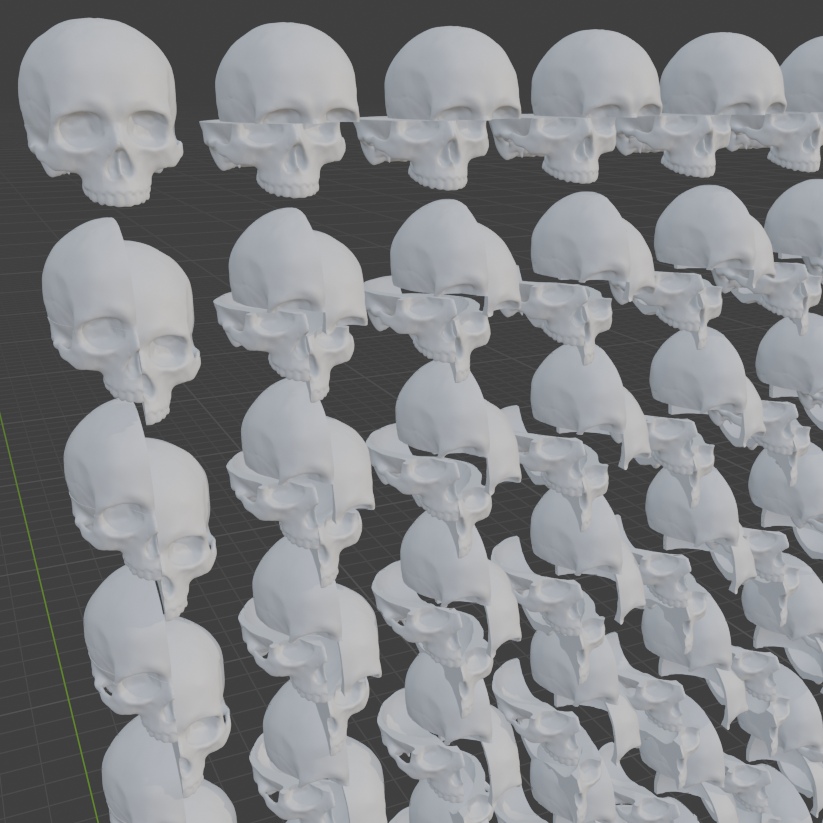
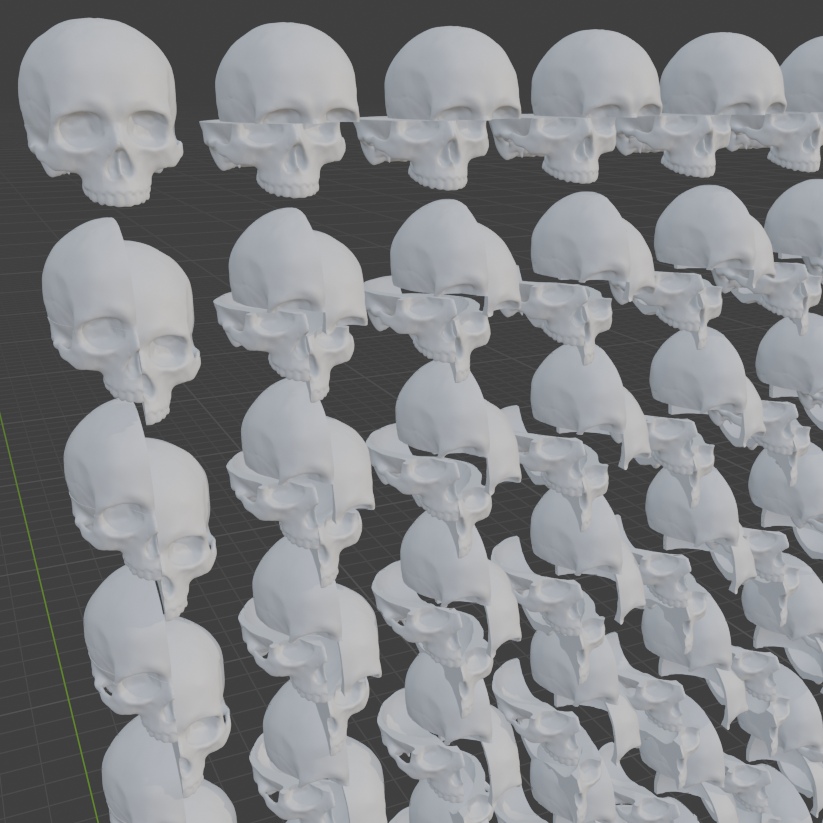

Blender Stuff
I've been using Blender causally for years and it's become my go-to tool whenever I am doing visual designs. I've made fair use of Blender's procedural tools, and dabbled in scripting.
Projects
Shape-key code generator
Using Blender's Python API, I made a code-generation script that allows me to
draw Blender objects in another program. The script takes a curve object and
all of it's shape keys, and generates a set of Java functions to draw it's curves
in the Processing environment. Along with a small template, the generated functions
let users draw shapes at any position or scale, and to specify shape-key values.
Although the script is limited and was never intended for public release, it does
let users easily use shapes made in Blender for creative coding projects in Processing.
The .blend file, template, and script are all
available on Github.
Simple Group Modifier (GTPCG)
As part of the GTPCG research effort, I used Blender's Geometry Nodes to make the
"Simple Group" modifier. It acts similarly to Blender's built-in Array modifier,
except that it allows for iterated translations, rotations, and scalings. There's
a demonstration .blend file available here.
This modifier has proven surprisingly helpful, as it allows for very fast generation
of complex, symmetric geometry. You can see a few examples of it here.
In terms of group theory, the name "Simple Group" is perhaps misleading, as
the modifier doesn't actually utilize "simple groups" in the group theoretic sense.
Rather, the modifier is the simplest way to use groups for procedural geometry.
The output of this modifier is an object composed of many copies of the original
object, that is symmetric under a cyclic group of specified order. This group's
action is to apply the specified transformation to each of the sub-objects, or return
to identity. Adding multiple of these modifiers corresponds to group multiplication.
 



Sun Starer
A procedurally animated character I made for an EDM performance. Each individual part
of this creature is simple, but I think the combined effect is rather mesmerizing.
You can find the here's the .blend file
and here's a link to the fully rendered video.
The project makes extensive use of Blender's node-based shader editor to achieve
the cell-shading, morphing colors, and fiery sun in the background. The animations
are mostly driven by Blender's Driver system, as well as shape-keys, constraints,
geometry nodes and curve modifiers. The project also uses the line-art system,
the compositor, and some good old fashioned modeling.

GTPCG Poster
I made most of the visuals for the GTPCG poster in Blender! There's nothing too special going on here, except a demonstration of how I use Blender for everything. You can find the .blend file here.